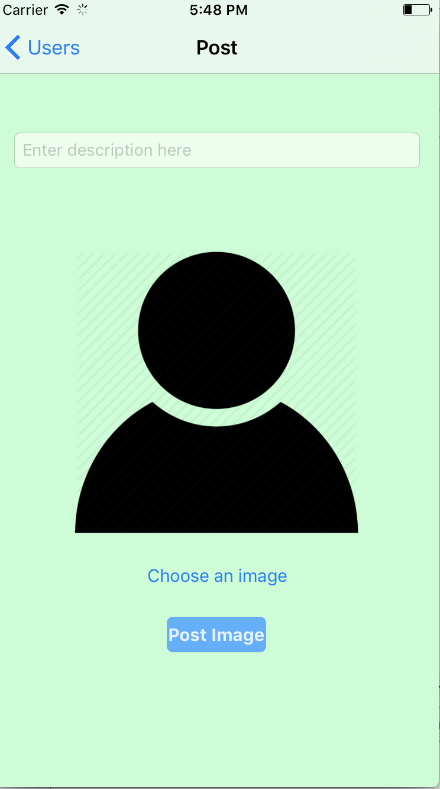

Summary: Created an iOS application that utilizes Swift and Objective-C to create a social networking application. Users are able to create unique login accounts and archive UI-Images directly to an Amazon Web Sever. This data is then able to be incorporated into a live user feed, customized with friends and family through a persistent backend server. Execution: I began creating a basic structure for a login screen. Using Xcode’s UI, I tackled connecting each UI field to a ViewController. This allowed for complete control and customization of each field. I then jumped right in and connected through an Amazon Web Server. I used EC2 because this was the most lightweight and logical route for the data I needed to push and pull, since the EC2 dynamically scales according to the users growth. I started by creating a basic shell structure up on the server end. It would hold basic information such as the user's name along with their password. Later on, I expanded this to store more, such as photos that each user has posted along with friends and groups that the users followed. After creating the structure, I had to then connect this down to the environment I was working in. I used a Parse Server to directly link with my EC2 using the ParseMutableClientConfiguration method. Going into the AWS environment, I used a Java SSH client to integrate with the key path I stored from before, which began to load up the server. Once the server was connected, I could easily have users sign into the application by checking to see if they were already users in the AWS server. If they weren’t, I then created a signup screen to allow them to get right in. I then focused on digging into the iPhones hardware functions to have the user upload pictures either from their camera or through their photo album. Of course the user had to be prompted for the app to have access first which was granted by an alert function. The user could then upload photos to a static page to make sure this would be the photo they wanted to post. This was done by having the UIImage pulled directly from the device and laid onto Xcode’s interface that was already programmed in ahead of time. The user could then press the submit button and this would send the photo up to the server and confirm to the user that it was a success. Following the confirmation screen, the user could go into a new screen of viewing all the photos they have posted. Now of course posting photos was fun, but having friends and family also view your photos along with you viewing their's really intrigued my mind. I had to create a new screen that would allow any user to search the entire data base of users that had an account stored on the AWS server. This was done by using a table view and pulling each user's information down. Now the user could scroll through the table view and see exactly who has an account on the app. The next step was to allow the user to select certain users to follow. This was done by using a function in the UITableViewDelegate and UITableViewDataSource to record each selected user and store this information in a data structure.  Once selected, the accounts would then show check marks next to each name to show that you are following them. The next step was to not only show the users they are following, but to also show their photos in the feed. This step allowed the users to see both their photos and the photos of the users they followed in the feed. This was done by checking each user's feed with the data structure stored before and pulling each user's account down to the feed. After going back and fixing a few bugs, I thought I could add another feature such as a small comment for each photo. This was done by adding a UILabel to the collectionView in the feed screen. The user could then choose their photo and write a comment. They would both be paired together and sent straight into the server to be then later pulled down in parallel. Utilizes: Swift, Objective-C, AWS, Caching, Cloud Storage, Local Persistent Data Visit Project